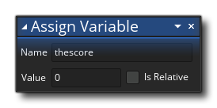

You've made it to Chapter 5 of the "My First Game" tutorial and in this chapter we are going to look at an important aspect of any game... keeping score. We're going to create a score for the player to use as a measure of how well they are doing in the game, and not only will we be keeping score, but we'll be using the different functions for drawing text to show it to the player as well. So, the player shoots an enemy and "kills" it and the game will award them a certain number of "points" which we'll add to their score. This score will then be displayed prominently at the top of the screen...
NOTE: If you close the accompanying video then you can get it back by clicking here
To keep things clear and easy to manage in our arena shooter project, we need to make a new object to act as our main "controller" object for the score. You should be familiar with how to do this so go ahead and make one now and call it "obj_score":
- Click the right mouse
 on the Object resource folder
on the Object resource folder
- Select "Create" to create a new object
- Name the object "obj_score"
The object "obj_score" will be our controller object and so we don't assign a sprite to it since we want it to draw other things (like the score text). Not assigning a sprite to an object means that when we run our game with an instance of that object in a room it will not be drawn, but that doesn't mean that it isn't doing anything. In this case our controller object won't be drawing a sprite but it will (by the end of this tutorial) draw some text and manage the player score value and certain game events.
Now we need to add an instance variable to the object in the Create Event which will be used to hold our score value. So, add a Create Event now, and in the action editor window that pops up drag the Assign Variable action and set it to the following: 
This gives us an instance variable with the name "thescore" and sets its value to 0. It is worth noting that previous versions of GameMaker had a built in global variable "score" ehich could be used for these things, but it meant that you could only ever have one score value for the entire game (which was limiting and it's generally better to have unique variables for score in each instance - for example, if we wanted to make a two player game then we couldn't use the global score and would have to make instance variables for each one, the same as we have here). GameMaker Studio 2 still has the "score" variable for backwards compatibility, but it has been deprecated and should not ever be used.
With that done we need go ahead and add a Draw Event.